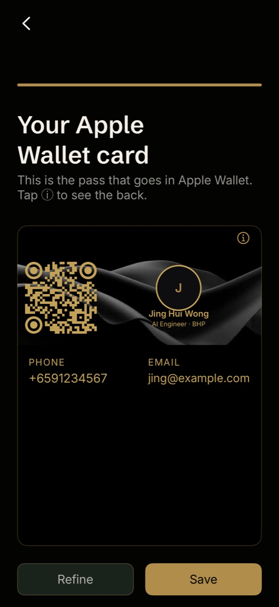
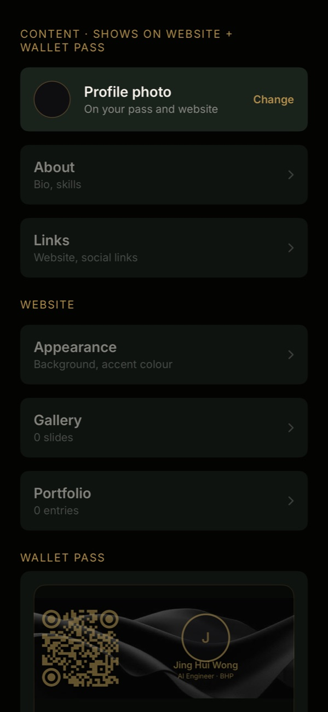
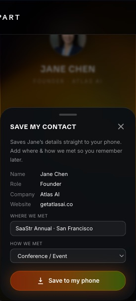
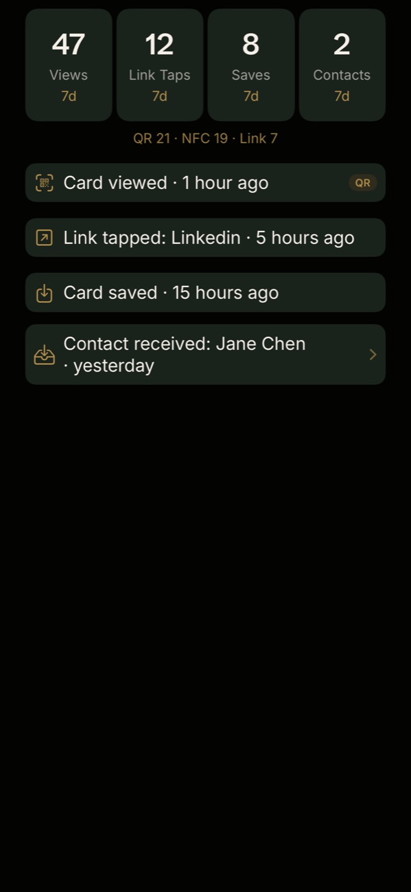

I built StandApart as a native iOS app that creates a custom Apple Wallet business card and a matching website, so someone can discover your portfolio, save your contact, and automatically send their contact to your phone.
Why I Built Stand Apart
A good conversation deserves a useful next step. Too often, after meeting someone, the conversation quietly fades after sharing contacts. A LinkedIn profile, phone number, and portfolio may describe someone, but they rarely preserve why the introduction mattered or make it easy for the other person to continue the exchange.
I wanted one place to present a person’s work with the same care they put into it. Stand Apart brings a designed card, a personal work page, and contact exchange into one flow. It is built for founders, designers, freelancers, and professionals who want their first impression to carry through to the follow-up.
Problem Statement
Exchanging a contact is easy. Keeping enough context to reconnect is harder:
- Details are scattered. A business card, résumé, portfolio, and social profile often live in different places.
- Sharing is usually one-way. Giving someone your details does not mean you receive theirs.
- The introduction loses its context. A name in Contacts may not tell you where you met or why you wanted to follow up.
- Presentation matters. A generic contact page gives little room for the personality and work behind the name.
- Extra steps interrupt the moment. Asking a recipient to install an app or create an account adds friction to a simple exchange.
The design question was: how can a single shared link help two people remember each other and continue the conversation?
How Stand Apart Works
Stand Apart brings together three parts of the experience:
- The iOS app is where you create your profile, customize your card and website, and see who has connected with you.
- The Apple Wallet pass keeps your custom card ready to share in person. Its QR code opens your portfolio website.
- The portfolio website presents your bio, work, gallery, and links. Visitors can save your contact or send their details back.
You need an iPhone to create a card in the Stand Apart app. Recipients can open your website on iPhone or Android without installing the app or creating an account.
Product Walkthrough
From joining the beta to sharing your first card, here is the complete holder journey.
-
Request early access
Join the Notify me waitlist for launch updates, or request a TestFlight invitation to try the current beta.
-
Install with TestFlight
Open the invitation on your iPhone. Install Apple’s free TestFlight app if prompted, then tap Accept, Install, and Open.
-
Open the app and create your profile
Sign in and add your name, photo, role, bio, contact details, and links. Stand Apart uses them to build both your Wallet card and portfolio website.
-
Review and customize your design
Preview your card, then refine its content, colours, portfolio, gallery, and Wallet design. One edit keeps your card and website in sync.

Preview before saving. 
Customize your card and site together. -
Add your card to Apple Wallet
Save the finished pass to Apple Wallet so it is ready whenever you meet someone. The QR code opens your portfolio website.
Your card stays ready to share in Apple Wallet. -
Share it your way
Show your Wallet QR in person, send your website link in a message, or use a linked NFC sticker. Every option opens the same portfolio and contact experience.
Interactive preview · Example profile
Jane Chen
Founder · Atlas AI
Tap either button to explore. This preview does not save or send contacts.
Try the real recipient experience ↗
What Happens During an Exchange
The holder shares once. The recipient opens the website in their browser, and both people leave with an easy way to reconnect.
- ShareThe holder shows their Wallet QR or sends their website link.
- ChooseThe recipient saves the holder’s contact, sends their own details back, or does both.
- ReconnectThe holder sees the new contact in the app and can follow up while the meeting is still fresh.
Recipient’s phone

Holder’s iPhone

Architecture Overview
A native SwiftUI app handles the holder’s experience, while a Vite and React site serves the public work page. Supabase supplies authentication, PostgreSQL, file storage, and access policies. Vercel hosts the website and the server functions used for validation, contact exports, exchange submissions, and Wallet pass generation.
-
01 / Clients
Native iOS appSwiftUI · Create, edit, Wallet, activityPublic websiteReact + Vite · Work page, save, exchange -
02 / APIs & data
Vercel functionsValidate requests · Render QR · Sign passesSupabaseAuth · PostgreSQL + RLS · Storage · Edge Functions -
03 / Delivery
Apple Wallet + APNsInstall and update passes · Notify holdersContacts + emailvCard export · Resend transactional mail
The distinction between those two request paths keeps the design practical. Routine owner-scoped reads and edits use the Supabase SDK with row-level security (RLS). Issuing a Wallet pass goes through a server function, where the user’s token and card ownership are checked before server-held Apple certificates sign the .pkpass file.
The public page loads an allow-listed card view through a Supabase function. That gives a recipient the information needed to render the page without exposing the holder’s private account data or Wallet authentication tokens.
Engineering Decisions
Native creation, browser-based receiving
I moved card creation into a native iOS app to make Wallet installation, previews, sharing, and contact handling feel at home on the device. Keeping the recipient’s experience on the web removes the installation step at the moment of meeting.
One identity across several surfaces
The card’s data powers the app preview, public page, contact export, and Wallet pass. The QR renderer uses a real encoded QR matrix with deterministic styling. The pass stays static, while the public page can use motion and richer portfolio content.
Update the card without replacing the link
A stable page URL lets the holder update their details without distributing a new link or rewriting an NFC sticker. The PassKit web service registers installed passes and supplies updated signed versions after a change notification.
Keep consent visible
Contact imports require confirmation. Return exchanges use an explicit form, and messaging links open drafts for the user to send. Activity counts describe actions on the page; a save-button action is not proof that someone completed the Contacts import.
Technology Stack
| Layer | Tools and role |
|---|---|
| iOS app | Swift, SwiftUI, PassKit, CoreNFC, native Contacts integration |
| Public website | React, Vite, Tailwind CSS, Motion |
| Backend and hosting | Vercel Node.js functions and static hosting |
| Identity and data | Supabase Auth, PostgreSQL with RLS, Storage, Edge Functions |
| Wallet and QR | passkit-generator, node-canvas, qrcode |
| Notifications and email | Apple Push Notification service (APNs), Resend |
| iOS distribution | Xcode, fastlane, TestFlight |
Current Stage & What Comes Next
The public website and receiver experience are live, and the native app is being tested through TestFlight. This version uses manual card creation and focuses on one professional card per user, the Wallet experience, and two-way exchange. LinkedIn-to-card generation is a future direction rather than a requirement for using the beta.
The next step is learning from real introductions: whether people find their pass quickly, whether recipients understand the exchange, and whether the saved context helps them reconnect. Those observations will guide refinements to onboarding and sharing as the app moves toward public release.
Explore the live example, join the launch waitlist, or get in touch to try the iOS beta.